A: img2img, 0.78, full VAE S 17.76, V SD 9.54B: img2img, 0.78, TAESD S 36.97, V SD 20.81
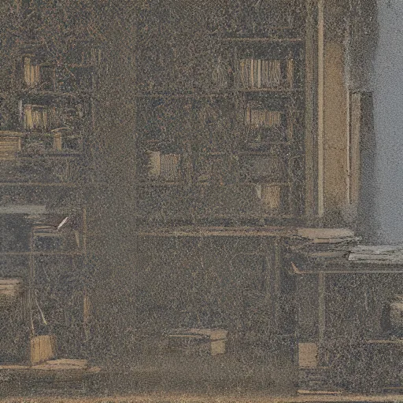
C: img2img, 0.9, TAESD S 36.97, V SD 20.81
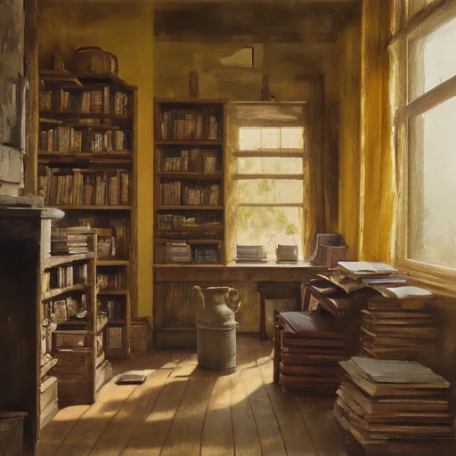
D: txt2img, 1 step, full VAE S 141.69, V SD 50.85
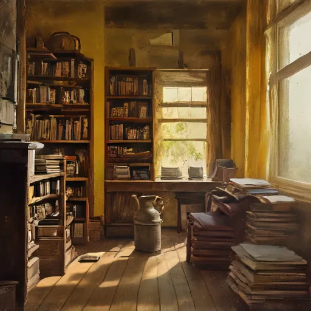
E: txt2img, 1 step, TAESD S 147.35, V SD 56.81
cinematic memory, painterly film still, soft grain, no text, a yellow bright quiet west-facing room at the end of a hallway, old books by a window sill, cardamom tea being brewed, a teapot steaming on the stove, golden afternoon light rushing into a rustic wooden home library full of books
scene-06
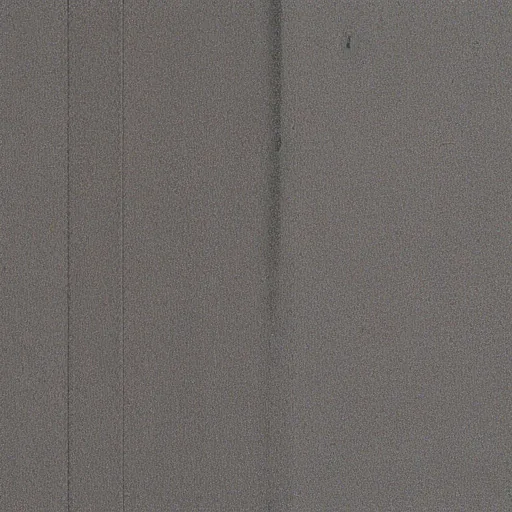
A: img2img, 0.78, full VAE S 16.49, V SD 8.77B: img2img, 0.78, TAESD S 19.57, V SD 16.78
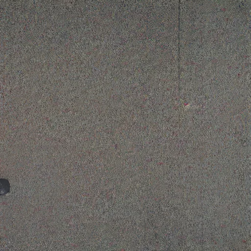
C: img2img, 0.9, TAESD S 19.57, V SD 16.78
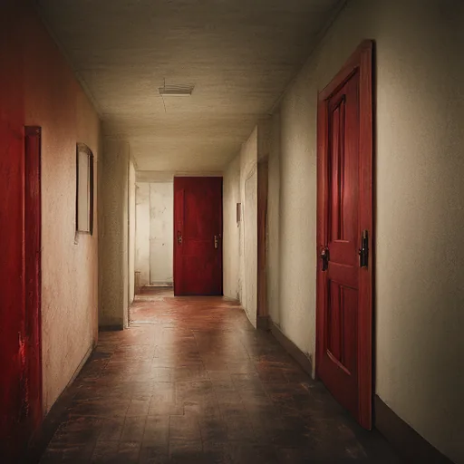
D: txt2img, 1 step, full VAE S 117.99, V SD 46.98E: txt2img, 1 step, TAESD S 119.03, V SD 50.92
cinematic memory, painterly film still, soft grain, no text, a red door open down a long hallway in a home
scene-13
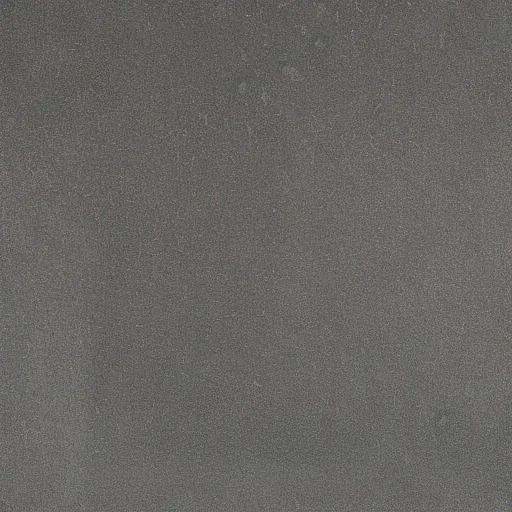
A: img2img, 0.78, full VAE S 11.21, V SD 9.46B: img2img, 0.78, TAESD S 24.43, V SD 15.40
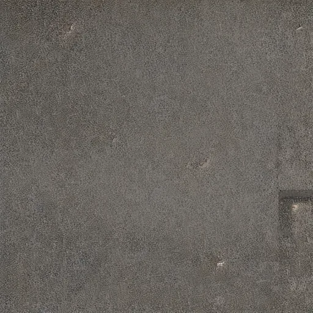
C: img2img, 0.9, TAESD S 24.43, V SD 15.40
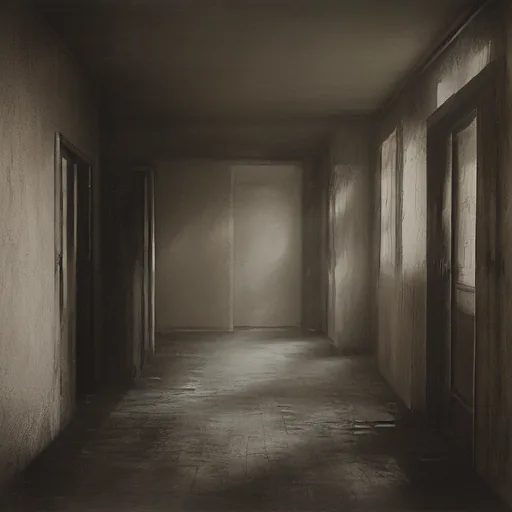
D: txt2img, 1 step, full VAE S 62.10, V SD 34.07
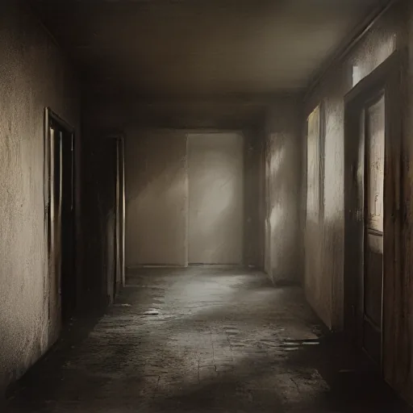
E: txt2img, 1 step, TAESD S 75.55, V SD 39.49
cinematic memory, painterly film still, soft grain, no text, empty house hallway dark
scene-20
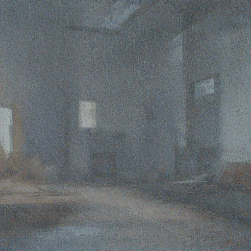
A: img2img, 0.78, full VAE S 25.93, V SD 14.84B: img2img, 0.78, TAESD S 29.22, V SD 22.31
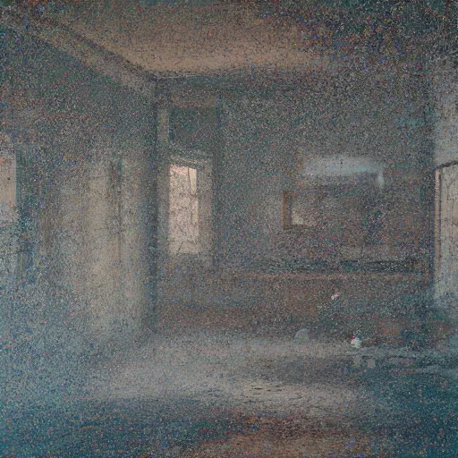
C: img2img, 0.9, TAESD S 29.22, V SD 22.31
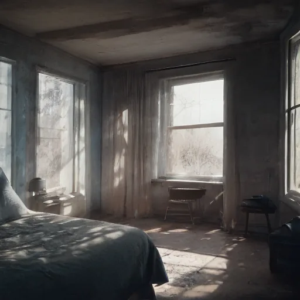
D: txt2img, 1 step, full VAE S 31.43, V SD 58.64E: txt2img, 1 step, TAESD S 38.52, V SD 60.91
cinematic memory, painterly film still, soft grain, no text, open windows in the morning with a tiny stream of light entering a blue moody bedroom